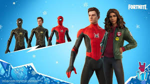

Introduction
The Spider-Man trilogy in the Marvel Cinematic Universe stars Tom Holland as Peter Parker. This trilogy explores his evolution from an ambitious high schooler into a seasoned superhero. The movies incorporate thrilling action sequences, emotional storytelling, and interconnected Marvel characters.
Trilogy Overview
Spider-Man: Homecoming (2017) follows Peter as he navigates high school life while battling Vulture. Spider-Man: Far From Home (2019) takes Peter on a European trip where he faces Mysterio's deception. Spider-Man: No Way Home (2021) brings back villains from past franchises, ultimately changing Peter’s life forever.
Impact & Legacy
This trilogy redefined Spider-Man's role in the MCU. His connection with Tony Stark introduced a mentor dynamic, while his final movie left him in a new, uncertain future. Fans continue to speculate about potential sequels and crossover appearances.
- Tom Holland's portrayal of Spider-Man
- Integration of Spider-Man into the larger MCU
- Villains and their unique challenges
- Emotional themes and storytelling
For more information, visit Marvel's official site or Spider-Man: No Way Home on IMDb.
